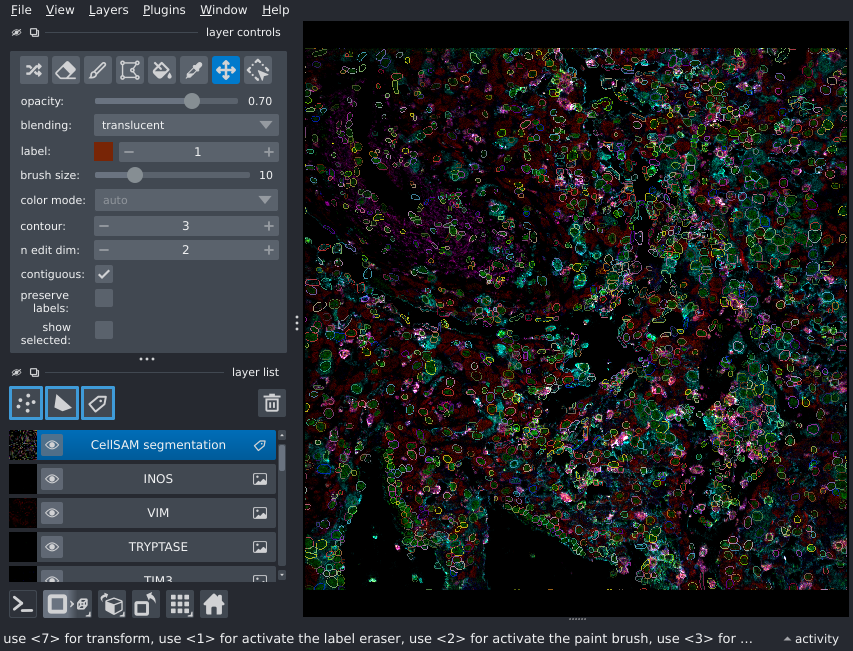
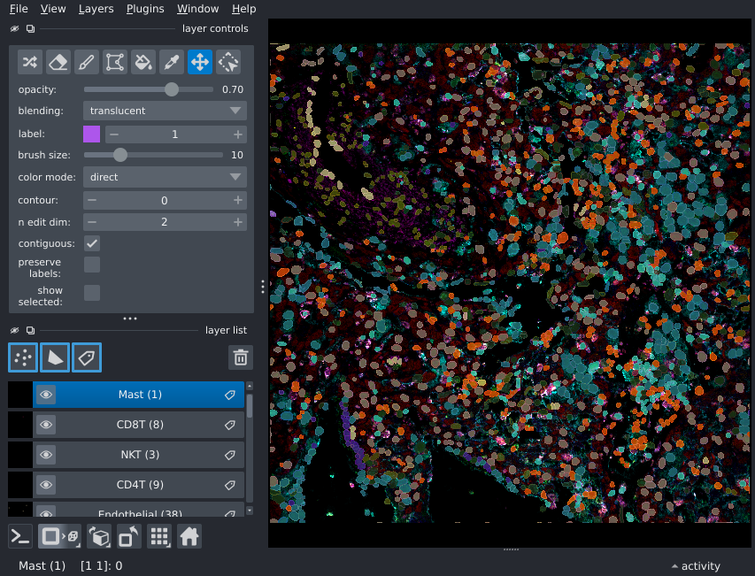

Tutorial#
The deepcell-types model predicts cell types from multiplexed spatial
proteomic images.
There are three main inputs to the cell type prediction pipeline:
The multiplexed image in channels-first format
A whole-cell segmentation mask for the image, and
A mapping of the channel index to the marker expression name.
Each of these components will be covered in further detail in this tutorial.
Example datasets#
This tutorial will make use of the spatial proteomic data available on the
HuBMAP data portal.
Users are encouraged to explore the portal for data of interest.
For convenience, a subset of the publicly-available spatial proteomic data
has been converted to a remote zarr archive.
The datasets in the zarr archive reflect the original HuBMAP indexing scheme
(i.e. HBM###_????_###, where # indicates a number and ? indicates an
upper-case alphabetical character).
Interacting with the zarr hubmap data mirror requires a few additional dependencies:
pip install "zarr>=3" s3fs
Note
The hubmap data mirror uses zarr format v3, thus requires zarr>=3 to be
installed.
import zarr
if not zarr.__version__.startswith("3"):
raise EnvironmentError(
f"The tutorial requires `zarr>=3`, version {zarr.__version__} found."
)
Exploring the archive#
z = zarr.open_group(
store="s3://deepcelltypes-demo-datasets/hubmap.zarr",
mode="r",
storage_options={
"anon": True,
"client_kwargs": dict(region_name="us-east-1"),
},
)
High-level structure of the data archive:
z.tree()
A more detailed look at the datasets:
import pandas as pd # for nice html rendering
summary = pd.DataFrame.from_dict(
{k:
{
"tissue": z[k].attrs["tissue"],
"technology": z[k].attrs["modality"],
"Num ch.": z[k]["image"].shape[0],
"shape": z[k]["image"].shape[1:],
}
for k in z.group_keys()
},
orient="index",
)
summary.sort_index()
In the interest of minimizing network bandwidth, we’ll use the HBM994_PDJN_987
dataset to demonstrate the deepcell-types inference pipeline.
k = "HBM994_PDJN_987"
Dataset anatomy#
As noted above, the cell-type prediction pipeline requires the multiplexed image,
the channel-name mapping, and a segmentation mask for the image.
The multiplexed image is stored in the image array for each dataset, and the
channel mapping is stored under the key "channels" in the image metadata.
Note that these two inputs are derived directly from the corresponding datasets
on the HuBMAP data portal.
ds = z[k]
img = ds["image"][:] # Load data into memory
chnames = ds["image"].attrs.get("channels")
# Sanity check: ensure that channel name list is the same size as the number of
# channels in the image
len(chnames) == img.shape[0]
Another bit of metadata that is useful (when available) is the pixel size of the image, in microns-per-pixel. While not strictly required, this can improve predictions by tamping down variability in image scaling. This information is stored in the dataset metadata.
mpp = ds["image"].attrs["mpp"]
mpp
Running the cell-type prediction pipeline#
Note
Both cellSAM and deepcell-types models can in principle be run on CPUs, but
it is strongly recommended that users make use of GPU-capable machines when
running cell segmentation/cell-type prediction workflows.
The final input is a segmentation mask.
deepcell-types has been intentionally designed for flexibility on this front
to better integrate into existing spatial-omics workflows.
However, for convenience, several pre-computed segmentation masks are stored
in the data archive: one computed by Mesmer
(available at ds["segmentations/torch_mesmer"])
and a second by CellSAM
(available at ds["segmentations/cellsam"]).
In this tutorial, we will demonstrate how to use one of these models to construct a full cell-type inference pipeline.
Cell segmentation with cellSAM#
In order to use cellSAM, it must be installed in the environment, e.g.
pip install git+https://github.com/vanvalenlab/cellSAM.git
import numpy as np
from cellSAM.cellsam_pipeline import cellsam_pipeline
For convenience, channels corresponding to nuclear markers and a whole-cell marker are stored in the dataset metadata.
Note
Nuclear markers are typically unambiguous. The whole-cell channel selection
on the other hand is less well-defined.
Users are encouraged to try different channels or combinations of
channels for improved whole-cell segmentation results.
The membrane_channel selection in the metadata is arbitrary and provided
for convenience.
# Extract channels for segmentation
nuc, mem = ds.attrs["nuclear_channel"], ds.attrs["membrane_channel"]
im = np.stack(
[img[chnames.index(nuc)], img[chnames.index(mem)]],
axis=-1,
).squeeze()
CellSAM expects multiplexed data in a particular format. See the cellsam docs for details.
# Format for cellsam
seg_img = np.zeros((*im.shape[:-1], 3), dtype=im.dtype)
seg_img[..., 1:] = im
Finally, run the segmentation pipeline:
mask = cellsam_pipeline(
seg_img,
block_size=512,
low_contrast_enhancement=False,
use_wsi=True,
gauge_cell_size=False,
)
# Sanity check: the segmentation mask should have the same H, W dimensions as
# the input image
mask.shape == img.shape[1:]
Let’s perform a bit of post-processing to ensure that the segmentation mask (represented as a label image) is sequential.
import skimage
mask, _, _ = skimage.segmentation.relabel_sequential(mask)
mask = mask.astype(np.uint32)
Visualizing results#
Note
Multiplexed images and their analysis products are extremely information dense; users are
strongly recommended to run tutorials locally to leverage napari for interactive
visualization.
import napari
nim = napari.Viewer(show=True) # show=False for headless runs (screenshots may be blank)
# Compute contrast limits
cl = [(np.min(ch), np.max(ch)) for ch in img]
# Visualize multiplex image
nim.add_image(img, channel_axis=0, name=chnames, contrast_limits=cl);
# Add segmentation mask
mask_lyr = nim.add_labels(mask, name="CellSAM segmentation")
mask_lyr.contour = 3 # Relatively thick borders for static viz

Cell-type inference with deepcell-types#
We now have all the necessary components to run the cell-type inference pipeline.
import deepcell_types
To run the inference pipeline, you will need a trained model. The
download_model helper fetches the checkpoint to $HOME/.deepcell/models
and returns the local path (it requires a DEEPCELL_ACCESS_TOKEN; see
Models for details). The returned path can be passed
straight to predict as model_name.
from deepcell_types.utils import download_model
# Downloads to $HOME/.deepcell/models on first call; subsequent calls reuse
# the cached checkpoint and return its path immediately.
model = download_model(version="2026-06-15")
# System-specific configuration
# NOTE: if you do not have a cuda-capable GPU, try "cpu"
device = "cuda:0"
# NOTE: For machines with many cores & large RAM (e.g. GPU nodes), consider
# increasing for better performance.
num_data_loader_threads = 1
The marker and cell-type registry the model needs is shipped with the
package, so no additional data is required to run inference.
If you instead want to source the registry from a local TissueNet zarr
archive, pass zarr_path="/path/to/tissuenet.zarr" to predict (or set the
DEEPCELL_TYPES_ZARR_PATH environment variable); the archive’s root attrs
must define the same standardized marker and cell-type registry the
checkpoint was trained against.
With the system all configured, we can now run the pipeline:
cell_types = deepcell_types.predict(
img,
mask,
chnames,
mpp,
model_name=model,
device=device,
num_workers=num_data_loader_threads,
)
Predictions are provided in the form of list of strings, where the order of the list is given by the ascending order of cell indices in the segmentation mask. Since we ordered the mask indices above, it’s straightforward to make this mapping explicit:
Note
Low-confidence abstention. Abstention is opt-in. By default
(ct_abstention_k=None) predict returns the raw argmax label for every
cell. To enable it, pass a float k: predict then flags cells whose
top-class probability falls below an IQR fence on the field-of-view’s
confidence distribution and rewrites their label to the sentinel "Unknown".
ct_abstention_k=0.2 reproduces the paper’s headline operating point:
cell_types = deepcell_types.predict(
img, mask, chnames, mpp,
model_name=model, device=device,
ct_abstention_k=0.2,
)
To inspect probabilities and which cells were abstained, pass
return_probabilities=True to receive a PredictionResult
with the full per-cell softmax matrix, the cell indices, a boolean
abstained array, and the pre-abstention cell_types_raw labels.
idx_to_pred = dict(enumerate(cell_types, start=1))
pd.DataFrame.from_dict( # For nice table rendering
idx_to_pred, orient="index", columns=["Cell type"]
)
Depending on the subsequent analysis you wish to perform, it may be convenient to group the cells by their predicted cell-type:
from collections import defaultdict
# Convert the 1-1 `cell: type` mapping to a 1-many `type: list-of-cells` mapping
labels_by_celltype = defaultdict(list)
for idx, ct in idx_to_pred.items():
labels_by_celltype[ct].append(idx)
Here’s the distribution of predicted cell types for this tissue:
from pprint import pprint
print(f"Total number of cells: {(num_cells := np.max(mask))}")
pprint(
{
k: f"{len(v)} ({100 * len(v) / num_cells:02.2f}%)"
for k, v in labels_by_celltype.items()
},
sort_dicts=False,
)
Visualizing the results#
There are many ways to visualize the cell-type prediction data, each with their own advantages and disadvantages. One way is to add an independent layer for each predicted cell type. The advantage of this approach is that individual layers can be toggled to focus on a particular cell type during interactive visualization.
# Regionprops to extract slices corresponding to each individual cell mask
props = skimage.measure.regionprops(mask)
prop_dict = {p.label: p for p in props}
# Create a binary mask layer for each celltype and populate it
# using the regionprops
for k, l in labels_by_celltype.items():
ctmask = np.zeros_like(mask, dtype=np.uint8)
for idx in l:
p = prop_dict[idx]
ctmask[p.slice][p.image] = 1
mask_lyr = nim.add_labels(ctmask, name=f"{k} ({len(l)})")
mask_lyr.colormap = napari.utils.DirectLabelColormap(
color_dict={None: (0, 0, 0), 1: np.random.rand(3)}
)
